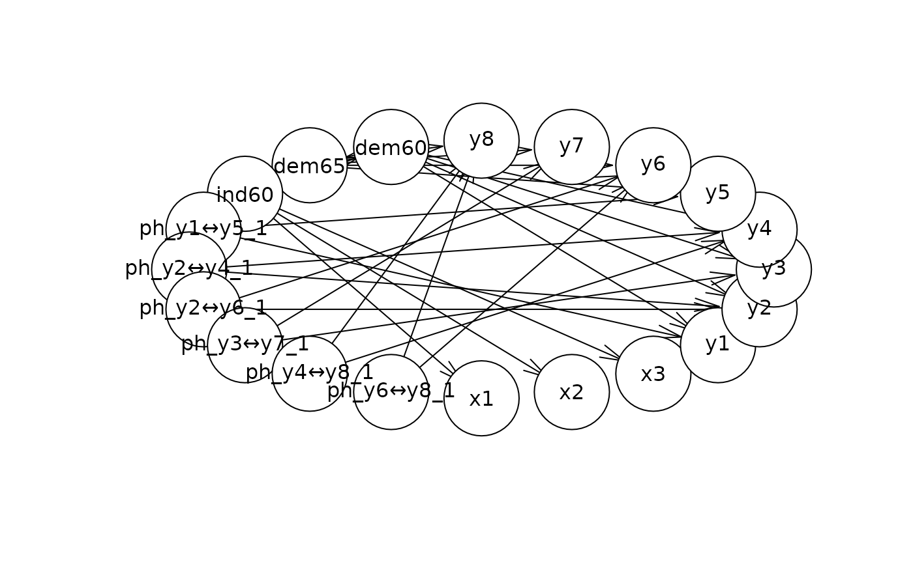

bnSEM
bnSEM.RdbnSEM (Bayesian network SEM) translates OpenMx models to Bayesian networks fitted with bnlearn. The resulting network can be used to investigate conditional distributions of the SEM.
Arguments
- mx_model
fitted OpenMx model of type MxRAMModel
- phantom_free
what to free in the phantom variables. Currently only supports "variance"
- optimize
should the substitute model in case of covariances be optimized?
Value
list with
bayes_net: A fitted Bayesian network of class bn.fit
dag: The underlying directed acyclical graph
internal: Internal elements
Examples
library(mxsem)
library(bnSEM)
model <- '
# latent variable definitions
ind60 =~ x1 + x2 + x3
dem60 =~ y1 + a*y2 + b*y3 + c*y4
dem65 =~ y5 + a*y6 + b*y7 + c*y8
# regressions
dem60 ~ ind60
dem65 ~ ind60 + dem60
# residual correlations
y1 ~~ y5
y2 ~~ y4 + y6
y3 ~~ y7
y4 ~~ y8
y6 ~~ y8
'
mx_model <- mxsem(model,
data = OpenMx::Bollen) |>
mxTryHard()
#> Running untitled1 with 39 parameters
#>
#> Beginning initial fit attempt
#> Running untitled1 with 39 parameters
#>
#> Lowest minimum so far: 3097.63615806747
#>
#> Solution found
#>
#>
#> Solution found! Final fit=3097.6362 (started at 226053.29) (1 attempt(s): 1 valid, 0 errors)
#> Start values from best fit:
#> 2.17965660253519,1.81820963061931,1.47133522555593,0.600476225524529,1.19078163114967,1.17453983728949,1.25097915949695,0.865040925331523,1.85464732983793,7.58133877838274,4.95567029997216,1.44012822695024,3.22449643702402,2.18300230967667,4.96817026941623,0.081387618238282,0.120428216824003,0.466660511916237,0.582544771417772,2.31304273462153,0.711586032159598,3.56003824647913,0.362809813327311,1.37177501845066,3.30768767535098,0.44859873678275,3.87532364844557,0.164465872330278,5.46466767551475,4.25644610672268,6.56311212998389,4.4525355169456,2.97807616166017,5.05438404773118,4.79219523309128,3.55769019802472,5.13625268427067,6.19626650977527,4.04339061338214
network <- bnSEM::bnSEM(mx_model = mx_model)
#> Found covariances in your model. The model will be translated to an equivalent model with phantom variables. The model with phantom variables will be returned in the internal list as 'internal_model'
#> Refitting the model with phantom variables. The fit will be the same, but the variances of the residuals will change.
#> Running untitled1 with 39 parameters
#>
#> Beginning initial fit attempt
#> Running untitled1 with 39 parameters
#>
#> Lowest minimum so far: 3097.63615806715
#>
#> Solution found
#>
#>
#> Solution found! Final fit=3097.6362 (started at 3139.3786) (1 attempt(s): 1 valid, 0 errors)
#> Start values from best fit:
#> 2.17965749523875,1.81821005297972,1.47133077721885,0.60047512222711,1.19078270281839,1.17454057434807,1.25098251468858,0.86504026189414,1.2721051613207,3.95821662791968,4.24409423898535,1.42155759913797,1.41338686216745,0.0813876789774039,0.120428019723046,0.466660090752255,1.73049747700694,2.84845832141213,1.57310334818262,0.448599154190737,3.87531885733079,0.16446383614774,0.582546236994082,1.44012296161065,2.18301157915414,0.711580478479417,0.362804466718719,1.37178920762329,5.46466628781713,4.25644263279652,6.56310968496179,4.45253339481962,2.97807374044563,5.05438379356886,4.79219439192371,3.55768952013757,5.13625225663867,6.19626389183541,4.0433899406545
# plot network
plot(network$dag)

# Check conditional distribution
# probability that dem65 in (1,2) given dem60 > 1:
bnlearn::cpquery(fitted = network$bayes_net,
event = (dem65 > 1 & dem65 < 2),
evidence = (dem60 > 1))
#> [1] 0.3453705
# Get distribution under this assumption:
dist <- bnlearn::cpdist(fitted = network$bayes_net,
node = "dem65",
evidence = (dem60 > 1))
hist(dist$dem65)
 # simulate data from the network and refit SEM to check if the estimates align:
sim <- bnlearn::rbn(x = network$bayes_net, n = 10000)
fit_sim <- mxsem(model,
data = sim[,mx_model$manifestVars]) |>
mxTryHard()
#> Running untitled2 with 39 parameters
#>
#> Beginning initial fit attempt
#> Running untitled2 with 39 parameters
#>
#> Lowest minimum so far: 15197334.9954437
#> OpenMx status code 6 not in list of acceptable status codes, (0,0)
#> Not all eigenvalues of the Hessian are positive: 2808329295.02199, 1443715202.71429, 1364824332.57766, 525700604.778789, 253671866.787891, 237489034.237398, 140218486.245862, 80425907.6695297, 63641354.9736278, 62283303.6654382, 49974408.4371292, 21008719.7015203, 10246843.1954015, 7737485.82942224, 5278544.84904862, 3122538.47475233, 2866967.36671073, 1676920.14524771, 1257114.95102175, 938615.072154393, 797518.120713111, 740240.822472916, 664344.043849142, 642266.641984189, 319821.843476056, 188581.30173174, 73457.8709454214, 51636.8533284034, 43278.3803037866, 27420.0660293892, 14369.6349497761, 12115.0578554517, 9561.14220567703, 9482.68315613495, 4072.01727529481, 2421.35834200975, -467315.211882806, -19058815.0157912, -31220953.1979465
#>
#> Beginning fit attempt 1 of at maximum 10 extra tries
#> Running untitled2 with 39 parameters
#>
#> Lowest minimum so far: 413484.886677515
#>
#> Solution found
#>
#>
#> Solution found! Final fit=413484.89 (started at 30044651) (2 attempt(s): 2 valid, 0 errors)
#> Start values from best fit:
#> 2.16900827052633,1.79872827163179,1.46532811689642,0.605492950093467,1.20428428252079,1.18692507080133,1.26081447431066,0.869128214781592,1.84960829237581,7.53086656975942,5.02589378400199,1.43639539371932,3.26881023694174,2.14508449712983,4.85364876662303,0.0805626603137282,0.131895563661242,0.452655645808306,0.619800261245077,2.39296738738863,0.640314323957817,3.47259207760793,0.332010638323118,1.30884452013188,3.30224802052475,0.459206524669606,3.82186910954083,0.177525460061172,5.45286269141005,4.22736715056843,6.57039991511552,4.44787025031023,2.9302252881998,5.05110765705948,4.78631674913563,3.56273833293874,5.1137767122638,6.16862045802275,4.00174018447292
round(abs(coef(fit_sim) -
coef(mx_model)) / abs(coef(mx_model)), 3)
#> ind60→x2 ind60→x3 ind60→dem60 ind60→dem65 a b
#> 0.005 0.011 0.004 0.008 0.011 0.011
#> c dem60→dem65 y1↔y1 y2↔y2 y3↔y3 y2↔y4
#> 0.008 0.005 0.003 0.007 0.014 0.003
#> y4↔y4 y2↔y6 y6↔y6 x1↔x1 x2↔x2 x3↔x3
#> 0.014 0.017 0.023 0.010 0.095 0.030
#> y1↔y5 y5↔y5 y3↔y7 y7↔y7 y4↔y8 y6↔y8
#> 0.064 0.035 0.100 0.025 0.085 0.046
#> y8↔y8 ind60↔ind60 dem60↔dem60 dem65↔dem65 one→y1 one→y2
#> 0.002 0.024 0.014 0.079 0.002 0.007
#> one→y3 one→y4 one→y6 one→x1 one→x2 one→x3
#> 0.001 0.001 0.016 0.001 0.001 0.001
#> one→y5 one→y7 one→y8
#> 0.004 0.004 0.010
# simulate data from the network and refit SEM to check if the estimates align:
sim <- bnlearn::rbn(x = network$bayes_net, n = 10000)
fit_sim <- mxsem(model,
data = sim[,mx_model$manifestVars]) |>
mxTryHard()
#> Running untitled2 with 39 parameters
#>
#> Beginning initial fit attempt
#> Running untitled2 with 39 parameters
#>
#> Lowest minimum so far: 15197334.9954437
#> OpenMx status code 6 not in list of acceptable status codes, (0,0)
#> Not all eigenvalues of the Hessian are positive: 2808329295.02199, 1443715202.71429, 1364824332.57766, 525700604.778789, 253671866.787891, 237489034.237398, 140218486.245862, 80425907.6695297, 63641354.9736278, 62283303.6654382, 49974408.4371292, 21008719.7015203, 10246843.1954015, 7737485.82942224, 5278544.84904862, 3122538.47475233, 2866967.36671073, 1676920.14524771, 1257114.95102175, 938615.072154393, 797518.120713111, 740240.822472916, 664344.043849142, 642266.641984189, 319821.843476056, 188581.30173174, 73457.8709454214, 51636.8533284034, 43278.3803037866, 27420.0660293892, 14369.6349497761, 12115.0578554517, 9561.14220567703, 9482.68315613495, 4072.01727529481, 2421.35834200975, -467315.211882806, -19058815.0157912, -31220953.1979465
#>
#> Beginning fit attempt 1 of at maximum 10 extra tries
#> Running untitled2 with 39 parameters
#>
#> Lowest minimum so far: 413484.886677515
#>
#> Solution found
#>
#>
#> Solution found! Final fit=413484.89 (started at 30044651) (2 attempt(s): 2 valid, 0 errors)
#> Start values from best fit:
#> 2.16900827052633,1.79872827163179,1.46532811689642,0.605492950093467,1.20428428252079,1.18692507080133,1.26081447431066,0.869128214781592,1.84960829237581,7.53086656975942,5.02589378400199,1.43639539371932,3.26881023694174,2.14508449712983,4.85364876662303,0.0805626603137282,0.131895563661242,0.452655645808306,0.619800261245077,2.39296738738863,0.640314323957817,3.47259207760793,0.332010638323118,1.30884452013188,3.30224802052475,0.459206524669606,3.82186910954083,0.177525460061172,5.45286269141005,4.22736715056843,6.57039991511552,4.44787025031023,2.9302252881998,5.05110765705948,4.78631674913563,3.56273833293874,5.1137767122638,6.16862045802275,4.00174018447292
round(abs(coef(fit_sim) -
coef(mx_model)) / abs(coef(mx_model)), 3)
#> ind60→x2 ind60→x3 ind60→dem60 ind60→dem65 a b
#> 0.005 0.011 0.004 0.008 0.011 0.011
#> c dem60→dem65 y1↔y1 y2↔y2 y3↔y3 y2↔y4
#> 0.008 0.005 0.003 0.007 0.014 0.003
#> y4↔y4 y2↔y6 y6↔y6 x1↔x1 x2↔x2 x3↔x3
#> 0.014 0.017 0.023 0.010 0.095 0.030
#> y1↔y5 y5↔y5 y3↔y7 y7↔y7 y4↔y8 y6↔y8
#> 0.064 0.035 0.100 0.025 0.085 0.046
#> y8↔y8 ind60↔ind60 dem60↔dem60 dem65↔dem65 one→y1 one→y2
#> 0.002 0.024 0.014 0.079 0.002 0.007
#> one→y3 one→y4 one→y6 one→x1 one→x2 one→x3
#> 0.001 0.001 0.016 0.001 0.001 0.001
#> one→y5 one→y7 one→y8
#> 0.004 0.004 0.010